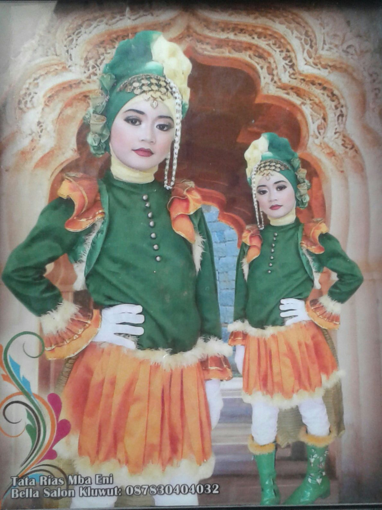

Selama di Sekolah Dasar (SD), saya aktif mengikuti kegiatan Pramuka dan ekstrakurikuler marching band. Di marching band, saya dipercaya menjadi mayoret dan itu menjadi salah satu pengalaman yang paling berkesan bagi saya karena bisa tampil di depan banyak orang dengan percaya diri. Dari kegiatan itu, saya belajar disiplin, tanggung jawab, dan kerja sama.
Saat SD, saya juga suka mencoba hal-hal baru. Saya pernah menjadi MC dan pengibar bendera saat upacara, beberapa kali ikut menari di acara perpisahan sekolah, serta mengikuti lomba fashion show dan Alhamdulillah berhasil mendapatkan juara. Selain itu, saya juga pernah mendapatkan juara kelas. Semua pengalaman tersebut membuat saya menjadi lebih percaya diri dan semangat untuk terus berkembang.